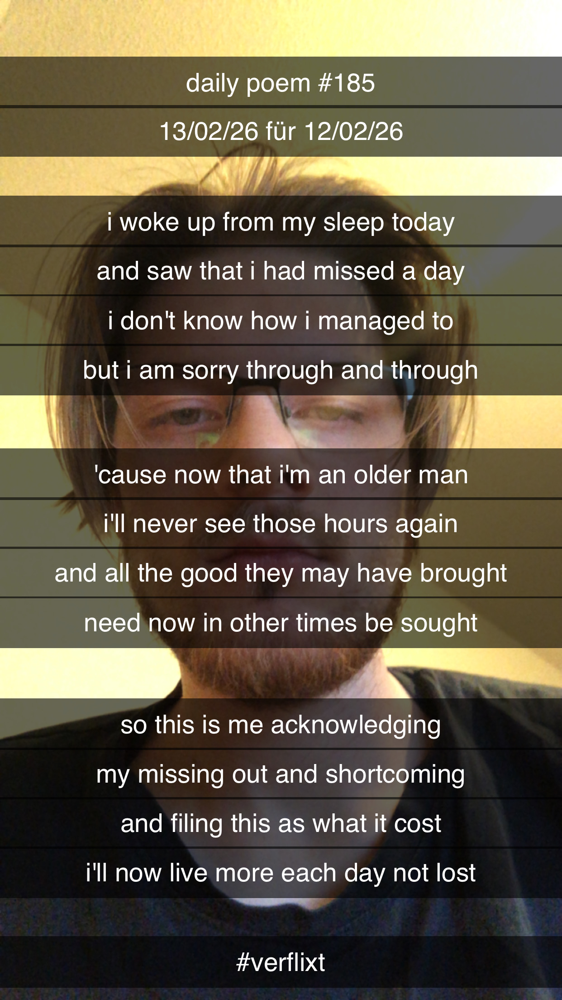

A Lost Day
I woke up from my sleep today
And found that I had missed a day
I don't know how I managed to
But I am sorry through and through
'Cause now that I'm an older man
I'll never see those hours again
And all the good they may have brought
Need now in other times be sought
So this is me acknowledging
My missing out and shortcoming
And filing this as what it cost
I'll now live more each day not lost
